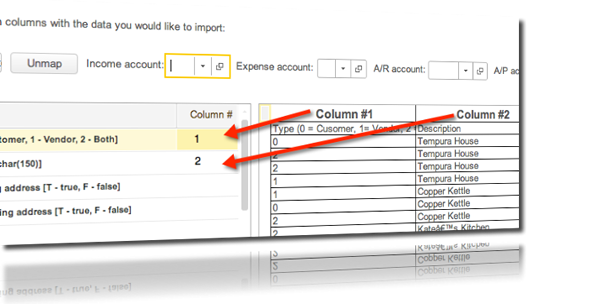

Introduction
This User Guide will get you up and running with the application and provide step-by-step instructions on how to complete tasks quickly and efficiently.
We realize that it is impossible to cover every situation you may encounter while using our software to run your small business, so feel free to contact us if you encounter something not covered in this guide.
Help and Support
We are committed to your helping you use our software. Please do not hesitate to reach out to our friendly support team. You can reach us on the phone or on the web. Tweet us! @delighteduser
| On the Web: http://help.accountingsuite.com | |
| create support requests, view knowledgebase, chat with support, participate in forums, links to training videos |
|
| On the phone: 888 328 8275, option 1 | |
| Monday - Friday 9am-5pm | |
How to Use this Guide
Visual Elements Used
Words in bold refer to navigational items or user interface elements in the application. For example, Click Add ...... indicates that there is a button or link labeled Add in the application to which the section is referring.
Text with an orange background will explain the navigational path to get to the current feature or section of the software.
Text with a green background provide step-by-step instructions on how to enter the document in that section.
Text with a light blue background indicate alternate ways of recording data or other types of situations you might encounter where the use the document that to which the section is referring would be appropriate.
Text with a red background indicates that caution should be used when performing the function or that other important details regarding the procedure should be considered.
Navigational Guides
Navigation in the step-by-step instructions will be indicated with two or more bolded words with an arrow between them. For example, Sales Sales Order indicates that the path to get to the function in the topic is Sales from the main menu, Sales Order from the Sales sub-menu.
Other Indicators
- Indicates there is an instructional video available on this topic.
- Indicates Step-by-Step instruction.
- Indicates warning should be exercised when performing this function.
- Indicates the navigational path to a location in the application.
Logging In and Logging Out of AccountingSuite
We use a SSL connection between the browser and our servers to protect your data. The ID used for AccountingSuite is the email address used when the account was set up.- Access the login screen: https://login.accountingsuite.com
- Type in your User name (email address) and your Password.
- Click Login.
To log out, choose File Exit.
Password Help
Creating or Resetting your Password
When you signed up for AccountingSuite, we send you an email to welcome you with a link to create a password. If you cannot locate this email, follow the directions below under Password Help. If you are still experience problems, please Contact Support.
Working with the Chart of Accounts
AccountingSuite comes with a basic Chart of Accounts to get you going. These may be changed by adding, edited or removing accounts to suit your company's specific needs. See the Chart of Accounts in the reference section to see the list of default accounts included in AccountingSuite.
Adding an Account to the Chart of Accounts
- Navigate to Accounting Chart of Accounts
- Click Create.
- Enter the Account Number in the Code field.
- Enter a Description (Account Name).
- Choose the Account Type from the drop-down list.
- Choose a 1099 Category, if applicable.
- Choose the appropriate Cash Flow Section from the drop-down list.
- Check the box if this is a Non-cash Income/Expense.
- Check the box if this is an Other Comprehensive Income.
- Enter a memo, if desired.
- Click Save to save and continue working on this account or Save and Close to finish.
Settings
Start by setting up your company on the AccountingSuite Settings screen by clicking on Settings from the Start Page.
Settings are grouped by function and may be accessed by using the tabs on the left in the Settings window.
Settings: Contact Info
The Contact Info screen stores information about your company. This information is throughout the system on things such as printed and emailed Invoices and Purchase Orders. The Fields that will print on the Invoices and Purchase Orders may be customized in the Sales Invoice Form settings and Purchase Order Form settings.
Settings: Closing the Books
In AccountingSuite, the Closing the Books helps prevent changes to these transactions that have been closed. Enter the Closing Date and choose Only Warn to allow users to change transactions prior to the closing date after viewing a warning message or Warn and Require Password to have the system require a password in order for changes to be posted.
Settings: Features
Turn on optional features in this section:
- Check the Multi-location checkbox if your company has more than one location where inventory is housed.
- Check the Multi-currency checkbox if your company deals with more than one currency.
- Customize the Vendor and Customer Labels.
- If printing checks, Adjust the Horizontal and Vertical alignments on the printed document. Adjustments are in millimeters and refer to the measurements on the printed check.
- Customize the number of Decimal Fields for quantiles.
Settings: Posting Accounts
Set the following default posting accounts for transactions.
- Bank
- Undeposited Funds
- Sales
- COGS (cost of goods sold)
- Expense
- Inventory
- Tax Payable
- Shipping Expense
- Bank Interest Earned
- Bank Service Charge
- Discounts and Allowances
- Exchange Gain
- Exchange Loss
Although these are the default posting accounts, new ones may be added or existing one may be edited on the fly.
Settings: Customer Custom Fields
Enter up to five custom fields associated with the customer record here. For each one, choose what kind of data will be saved (either a number or text) and enter a Label. The fields will appear in the customer record in the Custom Fields tab. Use these to save things like birthday, size, or referral source, for example.
Settings: Address Custom Fields
Enter up to five custom fields associated with the address record here. For each one, enter a Label. The fields will appear in the address record in the Custom Fields tab. Use these to save things like cross street, inter-office mail address or other address related attributes.
Settings: Item Custom Fields
Enter up to five custom fields associated with an item record here. For each one, choose what kind of data will be saved (either a number or text) and enter a Label. The fields will appear in the item record in the Custom Fields tab. Use these to save things like dimension, size, color or other item-specific attributes.
Settings: Logo
Upload a custom logo here. This is the logo that is included on emailed and printed documents. Once the logo is uploaded, it is resized to 167 x 100. We recommend sizing your image to these dimensions before uploading them to ensure it appears correctly on printed and emailed documents.
Settings: Integrations
Use this section to connect AccountingSuite to Third Party payment processors Stripe, Dwolla or Coinbase. For Stripe or Dwolla, click the Connect with Stripe or Pay with Dwolla and follow the on-screen instructions. For bitcoin integration, enter the Coinbase API key.
Settings: Development
If using the API, find the secret key here. Also enable API code display and enter webhook URLs. See API documentation for further information.
Settings: Sales Invoice Form
Customize the Sales Invoice form by checking the boxes next to the items that are to be printed on the Sales Invoice. Additionally, add text or images to three locations in the footer by checking Text and entering text or Image and uploading an image.
Settings: Purchase Order Form
Customize the Purchase Order form by checking the boxes next to the items that are to be printed on the Purchase Order. Additionally, add text or images to three locations in the footer by checking Text and entering text or Image and uploading an image.
Working with Lists
AccountingSuite allows for the customization of the data that appear in field lists. In this section, we'll set up commonly used values for these fields. In addition, you'll be defining document numbering schemes for Sales Orders, Sales Invoices, and Purchase Orders.
- Adding Payment Terms
- Adding Sales People
- Creating Price Levels
- Defining Categories
- Adding Classes
- Defining a Document Numbering Scheme
Lists: Adding Payment Terms
Payment Terms appear on Sales Invoices and are completely customizable. To help you get started, we've added the following terms:
- Due on Receipt
- Consignment
- Net 30
- Net 15
You may create, edit or delete other payment terms as needed.
Entering Payment Terms
- Click Create.
- Enter a Description which will appear on the printed, emailed and on-screen Payment Terms field.
- Enter a number in the Days field.
- Click Save to save or Save and Close to finish the Payment Term.
Lists: Working with Sales People
You may enter a list of Sales people if you wish to track the Sales person for a Sales Order or a Sales Invoice.
Entering Sales people
- Click Create.
- Enter a sales person's name in the Full Name field.
- Enter a number in the Days field.
- Click Save to save a draft or Save and Close to finish.
Related Items: Sales by Salesperson Report
Lists: Working with Price Levels
Price Levels allow you to create a complex pricing model by creating categories that are assigned to customers. You may add as many price levels that you wish and they can work in conjunction with the Price Matrix to build a complex pricing structure.
Assigning a Price Level to a Customer will have an effect on the pricing only if there is an entry in the Price Matrix. Pricing levels can be used to adjust prices based on loyalty programs, geographical cost differences or any other factor that your business requires. When considering price levels, think about groups of customers for which item prices may need to differ.
Entering Price Levels
- Click Create.
- Enter a Description for the Price Level.
- Click Save to save a draft or Save and Close to finish.
Lists: Defining Item Categories
Defining Categories allow you to group products and services for the purpose of organization, pricing and reporting. It may be used in conjunction with the Price Matrix to create a complex pricing structure or to simplify the entry of pricing data in AccountingSuite.
After Item Categories are defined, they are available to be attached to Items and applied to the Price Matrix for pricing purposes.
Lists: Defining Item Categories
- Click Create.
- Enter a Description for the Category.
- Click Save to save a draft or Save and Close to finish.
With the powerful multi-location features enabled you may add multiple warehouses, sections of warehouses, rows, bins or other locations.
Lists: Adding Inventory Locations
- Navigate to Quick Menu Settings Lists Locations.
- Click Create.
- Enter a Description for the Category.
- Click Save to save a draft or Save and Close to finish.
Lists: Setting up Document Numbering
The flexible document numbering system allows virtually any customized invoice numbering scheme.
For example, valid numbering schemes can be:
- All numeric (5, 5000, 500) characters.
- All alpha (SF-WIY-CT) characters.
- A combination of alphanumeric (SF-001-IA)
In addition, the characters can be in any order. If a number is used anywhere in the scheme, it will be incremented each time you create a new purchase order. For example, SF-001-IA will become SF-002-IA, SF-003-IA, etc. and 5000 will become 5001, 5002 and so on. Invoices numbers that consist of only Letters will not change upon creating a new invoice.
Changing the Numbering Scheme
- Navigate to Settings Lists More Document Numbering.
- Double-click on the line of the document for which the numbering scheme will apply.
- In the dialog that appears, enter the your scheme of letters and numbers in the Number box.
- Click Save.
Importing Data
AccountingSuite's Data Import feature allows you to bring your customers, vendors, products and services right along with you when you switch.
Because software packages store data different, getting what you need out of the old and into the new isn't always playing with apple and apples. To help you get your apples into oranges without introducing lemons, we have spent time training our partners to help with this task.
If you are completing this task on your own, we have provided templates and videos to help you complete this task as painlessly as possible.
Here are the steps needed in order to successfully get your old data where it needs to be.
Recommended Steps to take before Importing your Data into AccountingSuite
- Complete Step 3 of this guide completely before attempting to import. Some of the lists created in Step 3 will impact the successful import of data.
- Clean out any bad data in your old software before exporting it: clean out duplicate customers or vendors, ensure the inventory lists are complete, etc. Bringing in bad data will only result in bad data in the new system. Garbage in, Garbage out!
- Have the export instructions handy when working with your old software. You may also wish to have their support number handy in case questions come up along the way.
- Export the data into a separate files for each of the types you are importing. The four types of data that can be imported include (1) Customers / Vendors, (2) Items, (3) Chart of Accounts, and (4) Expensify Expenses.
Helpful Resources
Import Templates
- Customers / Vendors
- Chart of Accounts
- Items
- Expensify Expenses
Videos
- Using the Templates
- Importing the Data
Importing the Data
- Export data from the old software package. Refer to the instruction manual for that software for assistance.
- Save the exported data to a .csv file.
- Optional: For an easier import, copy the data from the old software into the appropriate column in the Import Template
- Navigate to Tools Import Data.
- Choose the type of data to import from the drop-down menu and click Next.
- In the list on the left, type the number of the column next to the Field name that corresponds to the spreadsheet you chose that is now displayed on the right. If you used an import template, click Map Fields and this step will be completed automatically. (see figure 1)
- Click Next.
- Uncheck any rows that you do not wish to import, including any header rows.
- Click Next.
- Verify that the data looks correct and is appearing in the right field.
- Click Import.
- Click the link to ensure the data was imported correctly.

Figure 1: Mapping Data fields in preparation for import.
Creating Users
Because we are Cloud Accounting, additional users can be created easily without the need to install additional software.
Creating a User
- Navigate to Lists User List
- Click Create.
- Enter the user's Email, Name, Title, and Phone
- If the users will be an administrator of AccountingSuite, check the Administrator checkbox. This role has full rights plus the ability to manage other users.
- Check Reports Only to restrict the user to viewing Reports.
- For each module of the software, check the access you wish to grant to the user: Full Access, View Only or No Rights
- Click Save to save and continue working or Save and Close to finish the user.
The user will receive an activation email once created. This email will contain a link that will allow the new user to create a password and login to the software.
See the section on resetting passwords if the user misplaces or doesn't receive the email or forgets the password.
Sales
Sales in AccountingSuite includes all the necessary functionality to properly record Sales and its related activities including orders, invoices, cash receipts, cash sales, credit memos, pricing and price levels. In addition, this is where the list of salespeople is maintained.
Sales Orders
The Sales Order records a request to sell goods or services.
A Sales Order initiates the Sales Workflow and may be for products and/or services. When a sales order is for services only, it may also be referred to as a work order. AccountingSuite tracks shipped and invoiced items against sales orders.
In AccountingSuite, a Sales Order may be created for a sale, but is not required. The creation of a Sales Order has no effect on the general ledger but may be used in your company's workflow.
Sales Orders can be created manually or automatically by an outside system via our API. For more information, visit our developer website.
- Navigate to Sales Sales Orders.
- Click Create.
- Choose the Customer from the drop-down list.
- The Date, Sales Order #. and Ship To fields pre-fill. Change if necessary.
- Enter the Customer PO / Reference # (optional)
- Click the More tab.
- Enter the Promised Date. (optional)
- Enter the Project. (optional)
- Enter the Bill To address. (optional)
- Enter the Confirm To contact. (optional)
- Enter the Sales Person. (optional)
- To enter address information for drop ship invoice, click the Drop-ship tab and enter the Customer and the Address.
- Click the Memo tab and enter a memo. (optional)
- Click Add to add a line item to the Sales Order.
- On the line item the Description, and Price will auto-fill.
- Enter the Quantity ordered.
- Repeat the previous 3 steps to add more line items.
- Enter a Discount %. (optional)
- Enter Shipping cost. (optional)
- Click the calculator next to the Sales Tax field and calculate the Sales Tax, if applicable.
- Click Save to save a draft or Post and Close to finish the order.
Each line on Sales Order must be unique, meaning at least one "key" field must differ on each line. The key fields on Sales Orders are Item Code, Location, Expected Delivery Date, Project, and Class.
Viewing Sales Orders (list view)
Columns may be sorted by clicking on the column name. Sales Invoices may be opened by double-clicking. The other operations that are available from the list view:
- Print Sales Invoice
- Print Packing List
- Print Packing list (drop-ship)
- Generate Credit Memo
- Output List (save to excel)
- Refresh List
Viewing an Individual Sales Order
From the Individual Sales Order view, you may
- Edit a Sales Order
- Print a Sales Order
- Print a Sales Quote
- Generate a Sales Invoice
- View Transactions associated with this Sales Order
- Create, view or edit a Recurring Sales Order Template. (see Recurring Templates for more information)
Sales Orders do not post any transactions to the General Ledger. The purpose of Sales Orders are to record the promise to sell products or services and to commit inventory.
Sales Invoices
Sales Invoices track sales of products or services for inventory control and for tax and accounting purposes.
Sales Orders record a customer's liability to you and record income from the transaction. Sales invoices also calculate Cost of Goods Sold (COGS) and update Inventory balances.
Creating a Sales Invoice
- Navigate to Sales Sales Invoices
- Click Create.
- Choose a Customer from the drop-down list. The following fields auto-fill if they were entered when creating the customer record: Terms, A/R Account, Due Date*, Ship To, Bill To, Email Address.
- Enter the Customer PO / Ref #.
- Click the More tab and enter the Project, Class and Confirm to fields. (optional)
- Change the Bill to and Ship to if applicable.
- Click the More (2) tab and enter the Carrier, Tracking Number #, FOB and Sales Person. (optional)
- Click the Print Options tab and enter Drop-ship Customer, Ship to, Confirm to and Drop-ship PO / Ref #. (optional). Note: The fields on this tab print on the Drop-ship PO; no other operations are performed.
- Click the Memo tab and enter a Memo, if desired.
- Click the Sales Tax tab and choose a Sales Tax rate, if applicable.
- Click Add to add a new line item.
- Choose Item from the drop-down list. The Description, Unit of Measure (UM) and Price auto-fill if these fields were entered when creating the item and an associated Price Matrix record.
- Enter the quantity (qty), Expected Delivery Date, Project, and Class.
- Repeat steps 10-12 for each item.
- Enter the discount % or discount (in dollars) if applicable.
- Enter the Shipping cost, if applicable.
- Click Save to save a draft or Post and Close to finish the Sales Order.
* The Due Date is calculated by adding the Number of Days in the Payment Terms to the Invoice Date on the Invoice.
Editing a Sales Invoice
- Navigate to the Individual Sales Invoice that you need to edit.
- Edit the fields that need to be changed.
- Click Save to save a draft or Save and Post to finish editing.
Take caution when editing posted invoices!
Please read the following regarding the effects that changing certain fields has on other data in your account.
- Changing the invoice date on a posted invoice will affect the following:
- Prices on lines will be recalculated as the price on the new invoice date may have been different. As such, the invoice total may change based on this recalculation.
- The numbers and values of items that have been run and printed on inventory reports may be different if the new invoice date falls between the date parameters used on the report.
- If the invoice has been emailed to a customer and your account is integrated with Stripe, the customer may see a different balance on the emailed invoice than what they see when reaching the Stripe payment screen after clicking "Pay Now" button in the original email.
- Changing the customer may have the following effects:
- If price levels have been implemented and the price level is different between the old customer and the new one, the line item prices will be recalculated and may change.
- If the terms are different with the new customer, the due date will change and affect some reports, including Accounts Receivable Aging reports.
To view a list of Sales Invoices, navigate to Sales Sales Invoices.
From the Sales Invoice list view you may:
- Sort the list by clicking on a column heading.
- View an individual Sales Invoice by double clicking any column in the cash receipt line.
- Find a Sales Invoice by clicking Find (see How to Use Find)
- Export the list to excel or other format by clicking More Output List
Other operations available from the list view include
- Print Sales Invoice
- Print Packing List
- Print Drop-ship Packing List
- Generate Credit Memo
- Export to Excel ( More Output List)
- Copy Sales Invoice (More Copy or Right-click Copy)
Viewing an Individual Sales Invoice
To view an Individual Sales Invoice, double-click the line of the invoice to view.From the Individual Sales Invoice screen, you may:
- Print the Sales Invoice
- Print a Packing List
- Print a drop-ship Packing List (drop-ship)
- Generate a Credit Memo (see Credit Memos)
- Email the Sales Invoice (see Emailing a Sales Invoice)
Emailing a Sales Invoice
- From the individual Sales Invoice view, click the Email tab.
- Enter the customer's email address. If the email address was entered when creating the Customer record, it will auto-fill.
- Enter an email address in the cc field to send a copy to any additional parties.
- Enter any additional text to be printed on the email receipt in the Notes box to the right of the email addresses.
Accounting
Posting a Sales Invoice creates general journal entries.
- Debit:
- Accounts Receivable
- Cost of Goods Sold (for inventoried items)
- Credit:
- Income
- Inventory (for inventories items
- Tax Payable
Cash Receipts
A Cash Receipt records a payment made by a customer.
In AccountingSuite, a Cash Receipt is used for recording the following kinds of transactions:
- payments received from a customer which may include partial payments and payments for multiple invoices;
- sales orders deposits, pre-payments and invoice over-payments;
- unapplied payments
- refunds made by a vendor
Recording a Cash Receipt
- Navigate to Sales → Cash Receipts.
- Click Create.
- Choose the Customer from the drop-down list.
- Change the Date, needed.
- Enter the Payment amount
- Choose the Payment Method from the drop down list.
- Choose the appropriate Type for the transaction.
- Choose Type - Undeposited to put the amount into the designated undeposited funds account ( chosen in Settings → Posting Accounts )
- Choose Bank Account to record the amount in a bank account.
- Enter the Reference #.
- Choose a Sales Order to link, if applicable.
- Enter a Memo. (optional)
- Click Save to save a draft, or Post to record the transaction.
Viewing Cash Receipts (list view)
From the list view, you can:
- Sort the list by clicking on a column heading.
- View an individual Cash Receipt by double clicking any column in the cash receipt line.
- Find a Cash Receipt by clicking Find (see How to Use Find)
- Export the list to excel or other format by clicking the Export to Excel.
Viewing an Individual Cash Receipt
Navigate to the list view by clicking Sales Cash Receipts. From the list view, double click a column in the cash receipt line.
From the individual Cash Receipt view you can:
- Edit the Cash Receipt
- Email the Cash Receipt (see Emailing a Cash Receipt)
- Charge the Customer Using Stripe (see Charging a Customer using Stripe)
In a typical situation, the total amount on the Cash Receipt will equal the total amount of one or more outstanding invoices. There are situations where this will not be the case, however, which include:
- Overpayment. When the amount received from the customer is greater than the invoices created. In this situation, the excess payment will remain in unapplied payments and will be reflected in the customer's balance.
- Recording a Partial Payment. When a customer pays part of an invoice, change the Payment Amount on the invoice line item to reflect the amount received. Specific amounts may applied to each invoice by entering the amount to apply in the payment field on the line. The total received will updated and reflected in the Payment field in the header. By default, the payment amount will be applied to the oldest outstanding invoice first and continue in chronological order towards the most recent outstanding invoice.
- Recording a Refund Made by Vendor. When you return a product to a vendor, create a Purchase Return and then record the amount received as Cash Receipt. In this case the Vendor name is put in the Customer Field.
Other Cash Receipt Tasks
Applying an Unapplied Payment or Credit Memo
- Create a new Cash Receipt document.
- Click the Credits Tab and check the checkbox next to the credit memo that has the balance to apply.
- Click Save to save a draft or Post and Close to finish the task.
Emailing a Cash Receipt
- From the individual Cash Receipt view, click the Email tab.
- Enter the customer's email address. If the email address was entered when creating the Customer record, the email address will be pre-filled.
- Enter an email address in the cc field to send a copy to any additional parties.
- Enter any additional text to be printed on the email receipt in the Notes box to the right of the email addresses.
Charging the Customer Using Stripe
- From the individual Cash Receipt or Cash Sale view, click the Charge with Stripe button.
- If the card has not been registered in Stripe, register it.
Recording cash receipts has the following effect on the General Journal:
- Debit: Bank Account (for funds put directly into the bank) or Undeposited Funds (funds that will be deposited at a later time)
- Credit: Accounts Receivable
Credit Memos
A credit memo reduces the amount owed to your company and may be issued because the customer returned all or part of the order or there is a pricing dispute, a marketing allowance, or other reason in which the customer will not pay you the full amount of the original invoice.
Recording a Credit Memo / Refund
- Navigate to Sales Credit Memos.
- Choose the Customer from the drop-down list.
- The Date, Location, and Number are auto-filled. Change if necessary.
- Click the Refund or Credit Memo toggle button.
- Enter a Reference #. (optional)
- Click the More tab and change the Accounts Receivable account, if necessary.
- Click the E-mail tab if you wish to send the customer a receipt of the credit memo. Verify the customer Email Address, add any cc addresses and make notes (optional).
- Click Send email.
- Click the Memo tab and enter a memo. (optional)
- Click Add and add line(s) for each item returned or for which the credit memo is issued.
- Verify and change (if necessary) the Quantity and Price.
- Click Save to save a draft or Post and Close to finish the Credit Memo.
Credit Memos debit Income and Inventory and Credit Accounts Receivable and Cost of Goods Sold.
Cash Sales
Cash Sales in AccountingSuite combine the functionality of Sales Invoices and Cash Receipts in one step.
Cash Sales can be used for a point-of-sale system or anywhere the product and the cash exchange hands at the same time. This type of transaction forgoes Accounts Receivable and records directly to the bank or cash on hand account. This can used when AccountingSuite is being utilized as a POS solution.
Recording a Cash Sale
- Click Sales Cash Sales.
- Click Create.
- Choose a Customer from the drop-down list. The default Bill to and Ship to fields auto-fill.
- Choose a payment Method.
- Choose the Undeposited radio button to indicate the sale is to be recorded to undeposited funds; choose Bank Acct. if the funds were deposited to a bank account. The default Account pre-fills.
- Enter a Check / Ref #.
- Click the More tab and enter a Project, if applicable.
- Click the Memo tab and enter a Memo, if desired.
- Click Save to save a draft or Post and Close to finish the Cash Sale.
Viewing a Cash Sale (List View)
>To view the list of cash receipts that have been previously entered in AccountingSuite, navigate to Sales Cash Sales.
From the list view, you can:
- Sort the list by clicking on a column heading.
- View an individual Cash Sale by double clicking any column in the Cash Sale line.
- Find a Cash Sale by clicking Find (see How to Use Find)
- Export the list to excel or other format by clicking the Export to Excel.
Viewing an Individual Cash Sale
Navigate to the list view by clicking Sales Cash Sales. From the list view, double click a column in the Cash Sale line.
From the individual Cash Sale view you can:
- Edit the Cash Sale
- Email the Cash Sale (see Emailing a Cash Sale)
- Charge the Customer Using Stripe (see Charging a Customer using Stripe)
Accounting
Entering a Cash Sale records the following transactions in the General Journal:
- Debits: Bank Account, Cost of Goods Sold (for inventoried items)
- Credits: Income Account, Inventory (for inventoried items), Tax Payable
Working with the Price Matrix
The Price Matrix allows for complete pricing flexibility and accommodates a very complex pricing structure.
Pricing may be defined and adjusted based on the item itself, an item category, or a customer Price Level. It may further be customized by manipulating prices based on a combination of Item Category and Price Level or Item and Price Level.
The simplest type of Pricing in the Price Matrix is the Item Price. In the absence of any other pricing, this will be the default price entered on orders and invoices.
Assigning a Price to an Item
- Navigate to Sales Price Matrix.
- Click Create.
- Click Item.
- Enter the Start Date that this price will be in effect.
- Enter the Item for which this entry will apply.
- Enter the Price for this Item.
- Click Save to save or Save and Close to finish.
Using the Item Category Price Matrix feature
In the rest of this section, we'll be utilizing the example of Simply Stickers, a business that sells many different kinds of stickers to help us illustrate the power and flexibility introduced by the Price Matrix.
This sticker business has nearly 20,000 differently designed round stickers that all are priced at $1. Rather than add 20,000 entries to attaching a price of $1 for each individual sticker, they created a category for this grouping and assigned it a price of $1. The price is attached to the category round sticker instead of the individual items. When the time came to raise their price to $1.25, they have a 30 second task of changing the round sticker category price from $1 to $1.25 rather than hours and hours that would need to be spent to change the price on the individual items 20,000 times.
Adding an Item Category Price in the Price Matrix
- Navigate to Sales Price Matrix.
- Click Create.
- Click Item Category.
- Enter the Start Date that this price will be in effect.
- Enter the Item Category for which this entry will apply.
- Enter the Price for this Item Category.
- Click Save to save or Save and Close to finish.
Using the Price Level Price Matrix feature
Continuing with the above example, let's say that the sticker company starts a customer loyalty program which gives them a $.25 discount off the price of a round sticker. Adjusting the pricing is easily be achieved by creating a "Loyal Customer" Price Level, assigning it to a customer, and the creating an Item + Price Level Price Matrix entry with a price of $.75. In this case, anytime a customer with the "Loyal Customer" Price level assigned to them buys a round sticker, adding it to an invoice results in a charge of $.75 while customers without the Loyal Customer Price Level will still be charged $1.
Using Price Level in the Price Matrix
- Navigate to Sales Price Matrix.
- Click Create.
- Click Item + Price Level
- Enter the Start Date that this price will be in effect.
- Enter the Price Level for which this price will apply.
- Enter the Price for this combination of Price Level and Item.
- Click Save to save or Save and Close to finish.
Using both Item Category and Price Level in the Price Matrix
You may further add to your pricing flexibility using the Item Category + Price Level option in the Price Matrix. Let's say the sticker company would like to offer your loyal customers a lower price on all sticker sets. Simply create an entry in the price matrix using the "Item Category + Price Level", With this option, creating an invoice that has a product with the category "sticker sets" and a customer with the price level "Loyal Customer" will result in the price entered in the price matrix.
Adding a Price for using the combination of Item Category and Price Level in the Price Matrix
- Navigate to Sales Price Matrix.
- Click Create.
- Click Item Category+ Price Level
- Enter the Start Date that this price will be in effect.
- Enter the Item Category for which this price will apply.
- Enter the Price Level for which this price will apply.
- Enter the Price for this combination of Price Level and Item.
- Click Save to save or Save and Close to finish.
Using Effective Dating with the Price Matrix
Use the effective dating Price Matrix feature to assign prices based on calendar date. Let's say you raise the price of your stickers by .01 cents every quarter. To prepare for the changes, you may copy the record in the Price Matrix and enter a future date in the Start Date field. When that date arrives, your pricing is automatically updated. Another possible use of this feature would be to add sales prices that are in effect for a particular time-frame.
Creating a effective dates in the Price Matrix
- Navigate to Sales Price Matrix.
- Click Create.
- Click the Price Type for which you'd like apply the effective date.
- Enter the Start Date that this price will be in effect.
- Enter the Item Category for which this price will apply (appears only if Item Category or Item Category + Price level Price Type is chosen).
- Enter the Price Level for which this price will apply. (appears only if the Item Category + Price Level or Item + Price Level Price Type is chosen).
- Enter the Item (appears only if the Item or Item + Price Level is Price Type is chosen).
- Enter the Price.
- Click Save to save or Save and Close to finish.
- Repeat Steps 1-10 to enter additional effective dates.
Purchases
The Purchases module is used to create Purchase Orders and Purchase Returns and to record Bills and Payments.
Purchase Orders
A Purchase Order is a document presented to a vendor for the purchase or goods or services.
The system uses purchase orders to track received and invoiced items. The receipt of shipped goods is recorded in the system by Creating a Bill; once a bill is created and posted, the Received, Invoiced and Backordered quantities are updated.
Creating a Purchase Order
- Navigate to Purchases Purchase Orders.
- Choose the Vendor from the drop down list. The default shipping location is auto-filled.
- Change the Ship to address, if applicable.
- Click the More tab and enter Project* and Class*, if applicable.
- Enter the Expected Delivery* (exp. deliv.) date.
- If this is an order to be drop-shipped, click the Print Options tab and choose the Customer and Ship to address from the drop-down menus.*
- Click the Memo tab and enter a Memo, if desired.
- Click Add to add a line to the purchase order.
- Choose the Item from the drop-down list.
- Enter the Quantity and Cost.
- Change the Expected Location, Expected Delivery Date, Project, and Class if applicable*.
- Repeat steps 7 - 11 for each item.
* The Project, Class, Expected Delivery Date and Expected Delivery Location can be changed for each line item. The system will allow duplicate line items if at least one of these items is different on each line.
View Purchase Orders (list view)
From the list view you can:
- Create a new Purchase Order
- Find a Purchase order
- Print a Purchase Order
- Generate a Bill
- Export to Excel by clicking More Output List
Viewing an Individual Purchase Order
To view a Purchase Order, navigate to the list view by clicking Purchases Purchase Orders. From the list view, double-click the purchase order you wish to view.
From the individual Purchase Order view you can:
- Edit the Purchase Order
- Print the Purchase Order
- Generate a Purchase Return
Tracking Received and Invoiced Items
The system uses purchase orders to track received and invoiced items. The receipt of shipped goods is recorded in the system by Creating a Bill; once a bill is created and posted, the Received and Invoiced totals are updated on the Purchase Order.
Backorders
Backorders are noted on the purchase order if the vendor partially delivers the quantity requested on the Purchase Order. The backordered quantity is updated upon creation of a posted Bill that has a quantity of one or more items that is less than the quantity ordered on the Purchase Order. When this condition exists, the status of the Purchase Order is set to Backordered until an additional bill is created to record the receipt of the rest of the items ordered.
Purchase Orders do not create General Journal entries nor do they affect inventory.
Bills
A bill is a document which records the receipt of goods and records the liability to the vendor providing the goods or services.
Recording a Bill or an Expense
- Navigate to Purchases Bills.
- Click Create.
- Choose a Vendor from the list.
- Choose the Payment Terms, Vendor Billing Address, and Accounts Payable account. If these fields were previously specified when creating the Vendor record, they will be automatically filled.
- Enter the Bill # (optional)
- Click More (1) and enter the Project and Class. (optional)
- Click More (2) to enter the URL of a scanned document or other reference. (optional)
- Click Memo to enter a memo. (optional)
- Click the Expenses tab and add expenses (optional*, see Adding Expenses to a Bill)
- Click the Items tab and add items. (optional*, see (Adding Items to a Bill )
* either 9 or 10 is optional. One of them must be used.
For a bill associated with a purchase order, you may alternatively navigate to the Purchase Order and choose Generate Bill. A bill will be generated and will auto-fill fields from the Purchase Order.
Recurring Bills. If your company has a bill that is received on a regular basis, a recurring bill may be created. The system will create a new bill with the timespan and parameters specified by the user. See Recurring Templates
View Bills (list view)
From the list view you can:
- Sort the list by clicking on a column header
- Create a new Bill
- Find a Bill
- Print a Bill
- Generate a Purchase Return
- Export to Excel by clicking More Output List
Viewing an individual Bill
To view an individual Bill, navigate to the list view by clicking Purchases Bills. From the list view, double click a column in the cash receipt line.
From the individual Cash Receipt view you can:
- Edit the Cash Receipt
- Email the Cash Receipt (see Emailing a Cash Receipt)
- Charge the Customer Using Stripe (see Charging a Customer using Stripe)
Adding Expenses to a Bill
Expenses on a bill are line items that aren't inventoried. The expense is recorded directly to the expense account.
- Click on the Expenses tab.
- Click Add.
- Choose the Account.
- Add the Amount of the expense.
- Add a Memo. (Optional)
- Choose a Project from the Drop-down list. (optional)
- Choose a Class. (optional)
Adding Items to a Bill
Items on bill refer to goods or services provided for which payment has not yet been made.
- Click on the Items tab.
- Click Add.
- Choose the Item. The description, unit of measure, price and location will auto-fill, if entered previously.
- Enter the Quantity.
Recording a Bill creates the following transactions in the General Journal:
- Debits: Expense Account for non-inventoried items or inventory, for inventoried items.
- Credits: Accounts Payable.
Payments
Payments record the payment of a Bill from a Vendor.
Payments can record payments made by check, cash, credit card or other payment method. They
Payments create the following transactions in the General Journal:
- Debits: Accounts Payable
- Credits: Bank Account
Purchase Returns
The purchase return document records an item returned to a vendor.
A Purchase Return may be created based on a Bill. In this case most of the purchase return fields are automatically filled from the Bill. A Purchase Return may also be created from scratch.Creating a Purchase Return from a Bill.
- Navigate to Purchases
Purchase Returns creates the following transactions in the General Journal:
- Debits: Accounts Payable
- Credits:
- Inventory Account (for inventoried items) or Expense Account (for non-inventoried items)
- Tax Payable
Cloud Banking
AccountingSuite connects you to hundreds of banks and credit card companies in the cloud eliminating the time-consuming task of entering transactions manually.
Click to accept a transaction rather than entering it in manually. Verify the categorization of a transaction to teach AccountingSuite to categorize it the next time automatically. Instantly verify your balances. These are just a few of the time-saving tasks that you'll enjoy when connecting your accounts using Cloud Banking.
Connecting Accounts
- Navigate to Bank Cloud Banking
- In the right column, click Add under the Accounts heading.
- Verify Online Account is selected.
- Choose the Bank from the drop-down menu.
- Click Add Accounts.
- Enter the credentials you use when logging on to online banking with your bank.
- Click Proceed.
- In the list of accounts with this financial institution, verify the accounts to connect have checkmarks. Uncheck any accounts you don't wish to connect at this time.
- Click Proceed.
Working with Downloaded Transactions
Transactions from your bank refresh automatically and will after you've used AccountingSuite for a while, it will even categorize them for you.
Accepting Transactions
Once a transaction is downloaded from the bank, it is required that it be accepted before any accounting transactions occur in AccountingSuite.
- Navigate to Bank Cloud Banking
- In the right column, highlight the account that you'd like to view.
- For each transaction, verify or change the Category (account) assigned by AccountingSuite.
- Choose a Customer / Vendor from the drop down list. (optional)
- Choose a Project from the drop-down list. (optional)
- Check the checkbox in the Accept column.
- Repeat steps 3-6 for all of the transactions in the list.
- Click Accept Selected Transactions.
Transactions will no longer appear in the Unaccepted Transaction tab. To view them, click the Accepted Transactions tab.
Unaccepting Transactions
If you need to unaccept a transaction for any reason, you may do so in Cloud Banking.
- Navigate to Bank Cloud Banking
- Click the Accepted Transactions tab.
- Locate the transaction to unaccept and check the box at the beginning of the line.
- Click Unaccept Transactions.
The transaction is moved to the Unaccepted Transactions tab.
Inventory
Anytime, anywhere inventory management in the cloud. Our advanced inventory stem is ready to track your multiple warehouse business complete with classes, projects, and user-defined, hierarchal location tracking that doesn't stop at the warehouse. Set up warehouse sections, rows, bins - the power is in your hands.
Inventory works very closely with our Sales and Purchases functionality to help you monitor your inventory on a minute-by-minute basis. Inventory quantities are updated when posting sales invoices, paying bills, recording credit memos, creating purchase returns and making inventory adjustments, so much of this inventory management happens behind the scenes automatically. We've created a set of tools that may be used to help you monitor and manage your inventory on a daily basis.
Enabling Multi-location Features
- Navigate to Settings Features
- Click the Multi location checkbox
- Click Save to save or Save and Close to finish.
Viewing Inventory Details
Easily locate an item, check on quantities or view the value of inventoried items.
Viewing the Value, Quantity and Location of an Individual Item
- Navigate to Quick Menu Items.
- Double click the item in the list of items or search for it using Find.
- View Item Quantities (on Purchase Orders, on Sales Orders, on hand, and amount available to promise) and Item Costs (last cost, average cost, accounting cost) at the bottom of the item window.
- View the location of the items by clicking the Inventory Location Info button.
Adjusting Quantities of Inventoried Items
Reality dictates that sometimes inventory needs to be adjusted in an accounting system. AccountingSuite provides simple forms to adjust incorrect totals.
Making Inventory Adjustments to Quantity and Price
- Navigate to Inventory Inventory Adjustments.
- Click Create.
- The Date defaults to today's date. Adjust if necessary.
- Choose the Item from the drop-down list.
- Enter the Adjustment. A positive number will increase the value and a negative number will decrease the value.
- Click Save to save or Save and Close to finish the inventory adjustment.
Warehouse Transfers
Moving Inventory from one Location to Another
Keeping enough of your products in the right place can be challenging in today's fast moving business world and sometimes you have to move product to fulfill the needs of your customers. Transfers in AccountingSuite are easily managed with out Warehouse Transfer functionality.Recording a Transfer of Inventory from One Location to Another
- Navigate to Inventory Warehouse Transfers.
- Click Create.
- The Date defaults to today's date. Adjust if necessary.
- Choose the Location from and Location to from the drop-down lists.
- In the Line Items, Choose an item from the drop-down list.
- Enter the Quantity to be transferred.
- Repeat steps 5 and 6 for each item to be transferred.
- Click Save to save or Save and Close to finish the warehouse transfer.
From the list view you can:
- Create a new Warehouse Transfer by clicking Create.
- Find a Warehouse Transfer by clicking Find.
- View or edit a Warehouse Transfer by double clicking the warehouse transfer.
From the individual Warehouse Transfer you can:
- Edit a Warehouse Transfer.
- Post a Warehouse Transfer (if saved and not posted)
- More.
- There must be sufficient quantity of inventory on hand to be able to post a sales invoice.
- The inventory value is based on a weighted average costing method that is calculated globally across all locations. To see the average cost of an item, view the item in Inventory Items or use one of the Inventory Reports.
- View up to the minute inventory counts, including items in-flight on purchase orders and sales orders by clicking the Inventory Info button on the item record.
Sales Tax
Sales Tax may be configured to be calculated at time of sale. Because of the complexity of sales taxes, the Sales Tax functionality in AccountingSuite was designed with complete flexibility. Configuring Sales Tax is comprised of three parts:
- Adding Sales Tax Agencies
- Adding Sales Tax Rates
- Enabling Sales Tax in Settings, Customers / Vendors and Items
In addition, sales tax may also be enabled on the individual line items when creating a Sales Order or a Purchase Order.
Enabling Sales Tax
Enabling Sales Tax in the System
- Navigate to Settings Sales Tax
- Change the Do You Charge Sales Tax? radio button to Yes.
- Choose a Default Tax Rate
- If applicable, Check Mark All New Customers as Taxable.
- If applicable, Check Mark All New Items as Taxable.
- Click Save to save or Save and Close to finish.
Creating a Tax Agency
- Navigate to Sales Tax Sales Tax Agencies
- Click Save to save or Save and Close to finish.
Adding a Sales Tax Rate
- Navigate to Sales Tax Sales Tax Rates
- Click Create
- Choose Single Tax Rate or Combined Tax Rate for the new tax. A combined tax rate will let you add two or more rates together to apply on an order.
- Enter a Name for the Tax Rate.
- If you are entering a combined tax rate, skip to Step 8
- Choose a Tax Agency from the drop-down list.
- If you are entering a single tax rate, skip to step 13.
- Click the + sign above the table.
- Enter a Name for the first tax component.
- Choose a Tax Agency from the drop-down list.
- Enter the Rate for this component.
- Repeat Steps 8-10 until all components of the combined sales tax have been entered.
- Click Save to save or Save and Close to finish the Sales Tax Rate
Enabling Sales Tax on an Item
To enable Sales Tax on an item, you may either
- Navigate to Inventory Items and choose the Item from the list for which you would like to enable tax. Check the Taxable checkbox; or
- Check the Taxable checkbox on the Sales Invoice Line Item.
The former will permanently make the item taxable. The latter will affect the item only on the invoice.
Enabling Sales Tax on a Customer
- Navigate to Quick Menu Customers / Vendors and choose the Customer from the list for which you would like to enable tax.
- Double-click the customer to open and check the Customer is Taxable checkbox.
- Click the Sales Tax tab and enter the Sales Tax Rate to apply for this customer.
- If applicable, enter the Tax Resale
The former will permanently make the item taxable. The latter will affect the item only on the invoice.
Applying Sales Tax on a Sales Invoice.
On a Sales Order or a Sales Invoice, tax will automatically be calculated if
a) the customer has been marked as taxable and
b) the items have been marked as taxable.
If both of these are not true, clicking the taxable checkbox on the line item will cause the default tax rate to be applied. The tax breakdown may be viewed by clicking the Sales Tax tab. In addition, you may choose to tax discounts given on a Sales Order or a Sales Invoice.
Recording Payment of Sales Taxes.
- Navigate to Sales Tax Sales Tax Payment.
- Click Create.
- Choose the Sales Tax Agency to which the payment is being made.
- Choose the Bank Account
- Choose the Period Ending Date
- Choose Accrual or Cash-Based based on your accounting practices.
- Enter the Amount of payment.
- If you need to enter an adjustment (an increase or decrease to the amount the system has recorded to to fines, etc, check the Adjustment checkbox. If not, skip the next step.
- Enter the Adjustment Amount, the Account and the Reason.
- Click Save to save or Save and Close to finish.
Sales Tax Tips and Tricks
- If you don't see the Sales Tax Menu item, Enable it in Settings.
- View the Sales Taxes Owed Report to see a breakdown by a user-defined time-frame grouped by agency.
- Keep track of what has been paid by using the Sales Tax Payment Form.
Using Stripe
Registering a Customer's Card in Stripe
- From the Customer Record, click the Credit Card Tab.
- Click Register Card in Stripe
- In the Stripe window that opens, enter your customer's email address, card number, expiration, and cvc. Click "Register Card"
Recurring Templates
Our Recurring Template manager creates your invoices, purchase orders and other documents on a regular, recurring basis.
- Navigate to the document for which you'd like to create a recurring template.
- On the Accounting tab, click Recurring Templates.
- Under Select Action, choose what action you'd like to recur: Generate, Remind, or Save. Only one action is available per recurring template. Generate will create a new document. Remind will create a notification in the notification widget on the start page.* Save will save a template for later use.
- Choose either Generate a draft of the document or Generate and post a copy of a document.
- Select the number of days in advance to execute the action.
- To set up the interval for the recurring template, choose the Daily, Weekly, Monthly or Yearly tab and set the appropriate days, weeks months or years.
- Enter a range of time to execute the recurring template in the Select Range section.
- Click Save and Close.

* see instructions for adding the notification widget to the start page.
Reporting
| Report Name | Description | Report Parameters | Options | |
|---|---|---|---|---|
| Accounting | ||||
| General Ledger | Gives a complete record of financial transactions over the life of the company. | Period, Account | None | |
| Trial Balance | Lists all general ledger accounts with balances. | Period | Accounts, Accounts with code and description in separated columns, hierarchical accounts, hierarchical accounts with code and description in separated columns. | |
| Income Statement (accrual basis) | Shows the profit or loss during a given time period as well as the incomes and expenses. This reports calculates based on the accrual method of accounting. | Period | Total, Years, Quarters, Months, Weeks, Days | |
| Income Statement (cash basis) | Shows the profit or loss during a given time period as well as the incomes and expenses. This reports calculates based on the cash based method of accounting. | Period | Total, Years, Quarters, Months, Weeks, Days | |
| Income Statement by Class | Shows the profit or loss with income and expenses during a given time grouped by Class. | Period | Total, Years, Quarters, Months, Weeks, Days | |
| Income Statement by Project | Shows the profit or loss with income and expenses during a given time grouped by Project. | Period | Total, Years, Quarters, Months, Weeks, Days | |
| Balance Sheet | Shows the balances of assets, liabilities and owner's equity for a given day. | Period | Total, Years, Quarters, Months, Weeks, Days | |
| Sales Tax Owed | Shows all sales tax collected and owed grouped by tax agency. | Period, Accounting Method | Month, Quarter, Year, Half-year, Tax rates across agencies. | |
| Vendors 1099 | Lists all 1099 vendors with balances. | Tax Year | 1099 Vendors that met threshold, 1099 Vendors below threshold, Non-1099 Vendors | |
| Check Register | Lists checks issued via Payments | None | None | |
| Budget Plan actual | Lists amounts over and/or under a budget prepared for a given year. | Year | None | |
| Bank Balances | Lists all bank accounts and balances. | Foreign Currency (FCY) | ||
| Accounts Receivable | ||||
| Accounts Receivable Aging (by due date) | Lists the outstanding invoices with totals grouped by the age calculated by the due date. | None | Foreign Currency (FCY) | |
| Accounts Receivable Aging (by invoice date) | Lists the outstanding invoices with totals grouped by the age calculated by the invoice date. | None | Foreign Currency (FCY) | |
| Sales | ||||
| Sales Transaction Detail | Show a detail of all sales transactions. | Time Period, Company | None | |
| Open Sales orders by item | Shows all open sales order for an item. | Period, Item Type, Item Category, Item, Order, Grouping | None | |
| Sales by sales person | Shows sales for a given sales person. | Period, Sales person | Total, Years, quarters, months, weeks, days. | |
| Accounts Payable | ||||
| Accounts Payable Aging (by due date) | Lists the outstanding purchase orders with totals grouped by the age calculated by the due date. | Date, Vendor | Foreign Currency (FCY) | |
| Accounts Payable Aging (by PO date) | Lists the outstanding purchase orders with totals grouped by the age calculated by the Purchase Order date | Date, Vendor | Foreign Currency (FCY) | |
| Purchases | ||||
| Purchase Transaction Detail | Shows a detail of all purchase transactions. | Time Period and/or Company | None | |
| Open Purchase Orders by Item | Lists all open purchase orders for a given item. | Period, Item Type, Item Category, Item, Order, Grouping | None | |
| Inventory | ||||
| Quantity on Hand by Location | Gives a listing of product(s) quantities for a given location(s). | Period, Location, Category, Item | None | |
| Inventory Item Quick Report | Gives a detailed list of transactions for an item for a given period. | Period, Item, Location | None | |
| Inventory Valuation Summary | View average and accounting costs, asset value and retail value instantly. Group Items for inclusion in reports and or just include service items. | Period, Item, Type, Category, Grouping | None | |
| Inventory Valuation Detail | View all transactions by an item and with running valuation totals and get an instant picture of how well and item is performing over time. | Period, Item | None | |
| Inventory Stock Status by Item | Easily see availability of an item on a super granular level by viewing amount available to promise based on calculations that consider Purchase Orders and Sales Invoices currently in-progress. | Period, Location, Category, Item | Grouping | |
Reference
Chart of Accounts
| Code | Description | Account type |
|---|---|---|
| 1000 | Bank account | Bank |
| 1100 | Undeposited funds | Other current asset |
| 1200 | Accounts receivable | Accounts receivable |
| 1300 | Inventory | Inventory |
| 2000 | Accounts payable | Accounts payable |
| 2100 | Purchase liability | Other current liability |
| 2200 | Tax payable | Other current liability |
| 3000 | Equity | Equity |
| 3100 | Retained earnings | Equity |
| 4000 | Income | Sales |
| 5000 | Cost of goods sold | Cost of sales |
| 5100 | Cost variance | Cost of sales |
| 6000 | Expense | Expense |
| 6200 | Bank service charge | Other expense |
| 8200 | Exchange gain | Other income |
| 8300 | Exchange loss | Other expense |
| 8500 | Bank interest earned | Other income |
© 2014 Yellow Labs Software, Inc
Version 0.1.0